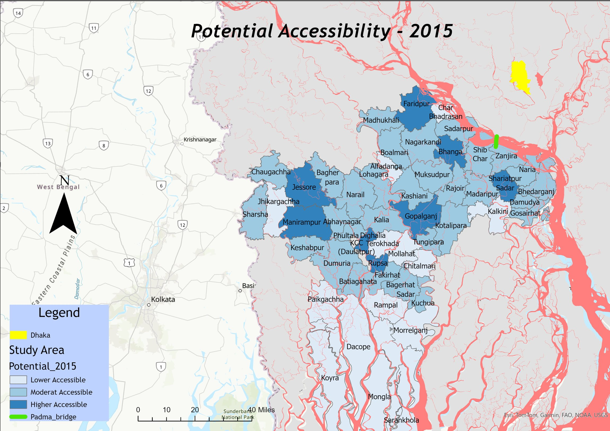
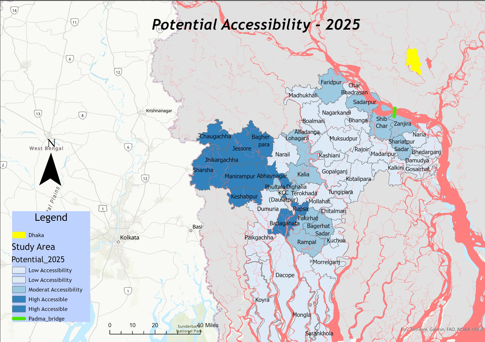
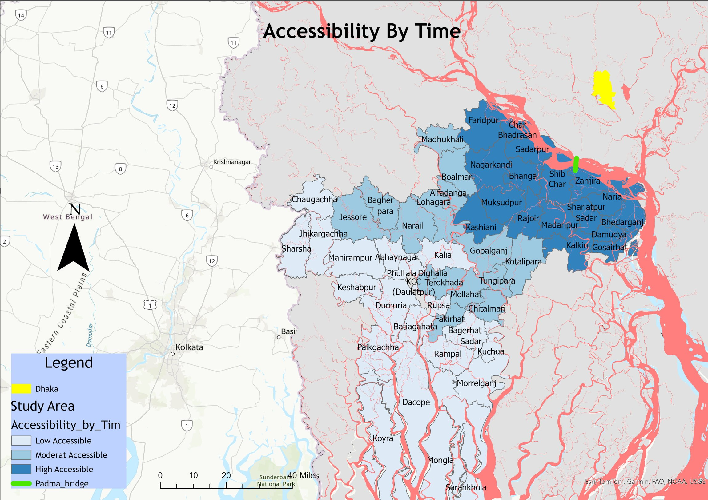
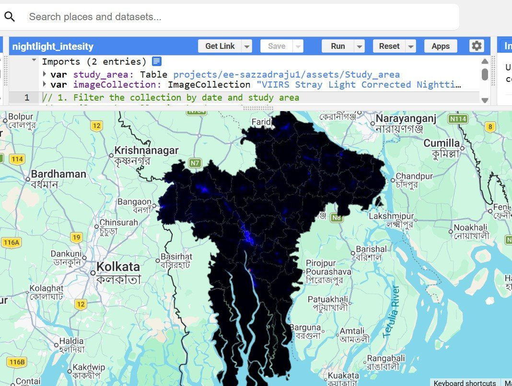

Gains across all 58
The course report finds improved potential accessibility in every study upazila, with substantial differences in magnitude.
Measuring how potential accessibility changed across southern Bangladesh between 2015 and 2025, through a gravity-based model of population, nighttime light, local roads, and travel time.

Using a modified gravity-based accessibility measure, this course project compares modeled access to opportunities before and after the Padma Bridge opened in 2022.
All values are reported in the GEO 519 course report. The model includes multiple changing inputs; results cannot isolate the causal effect of the bridge.
Historically, a Padma River ferry crossing constrained road access between Dhaka and southwest Bangladesh. The opening of the Padma Bridge in 2022 offered a new fixed road connection. This study investigates how the region’s potential accessibility—the reachability of opportunities, accounting for both travel impedance and the attractiveness of places—changed in the period 2015–2025.
Instead of treating all destinations as equally important, the study combines population, satellite-observed nighttime light intensity, local road density, and estimated travel time. It evaluates 58 upazilas and describes how regional accessibility changed unevenly across them.
How did the Padma Corridor reshape modeled potential accessibility in southern Bangladesh between 2015 and 2025, and which upazilas experienced the largest relative changes?
Inspired by Hansen’s potential accessibility framework, the model treats opportunity as increasing with population and activity, and decreasing as travel time rises.
RD: local road density; P: scaled population; NTL: nighttime light intensity; T: estimated travel time. Equation and parameter values reproduced from the submitted report.
Compile administrative upazila boundaries and road data, alongside population information from the Bangladesh Bureau of Statistics.
Use population as a proxy for social and economic interaction potential; use VIIRS nighttime light intensity as a proxy for local activity.
Model travel time using an assumed 60 km/h road speed and a 4.5-hour ferry crossing penalty in the pre-bridge setting; use exponential distance decay β = 0.15.
Calculate modeled accessibility with equal population and nighttime-light exponents (0.5 each); compare scores and percentage changes across 58 upazilas.
Tools: ArcGIS Pro for GIS and network analysis, Google Earth Engine for satellite-based nighttime lights, and R for data management and model calculations.
The course report finds improved potential accessibility in every study upazila, with substantial differences in magnitude.
Sharsha and Jhikargachha ranked highest by relative modeled accessibility increase, reflecting changed travel impedance, connectivity and opportunity proxies.
Khulna- and Jessore-area upazilas had relatively high accessibility in 2015 and remained prominent in the 2025 rankings.
2015–2025, as ranked in Table 3 of the research report.
| Upazila | District | Change in modeled accessibility |
|---|---|---|
| Sharsha | Jessore | +1,248% |
| Jhikargachha | Jessore | +1,187% |
| Dacope | Khulna | +1,042% |
| Sarankhola | Bagerhat | +1,035% |
| Mongla | Bagerhat | +986% |
Relative changes depend on each upazila's initial index value. A large percentage gain does not necessarily indicate the highest absolute accessibility in 2025.
Scores transcribed from the separate 2015 and 2025 ranking tables.
| Upazila | 2015 score | 2025 score |
|---|---|---|
| Daulatpur | 1.309 | 5.842 |
| Jessore | 1.143 | 5.108 |
| Rupsa | 1.101 | 5.421 |
These are model-derived index values, not travel times or monetary measures.
The results suggest spatial restructuring in the model’s measure of access to potential opportunities. Because road density, population, nighttime lights and travel times vary together, the study cannot attribute the observed changes solely to the bridge, nor does it directly measure actual employment, household income or industrial relocation.
These figures are the original mapped outputs provided with the project. Select a map to view a larger image. Colors and legends follow the submitted research figures.




These maps represent a comparative accessibility model, not a causal impact evaluation of the Padma Bridge. Changes may also reflect population variation, road network changes, nighttime light intensity, and modeling assumptions.
The project offers an exploratory quantitative framework for geographic comparisons; future work could include observed travel times, sensitivity tests, improved temporal harmonization, and complementary socioeconomic outcomes.
This work was submitted as a GEO 519 course research project. The original report and slides are provided to make the scope, assumptions and figures transparent.
Sources used in the study include Bangladesh Bureau of Statistics, Bangladesh Roads and Highways Department, HDX boundary data, and VIIRS nighttime lights. See the report for complete references and model details.
← Explore other research